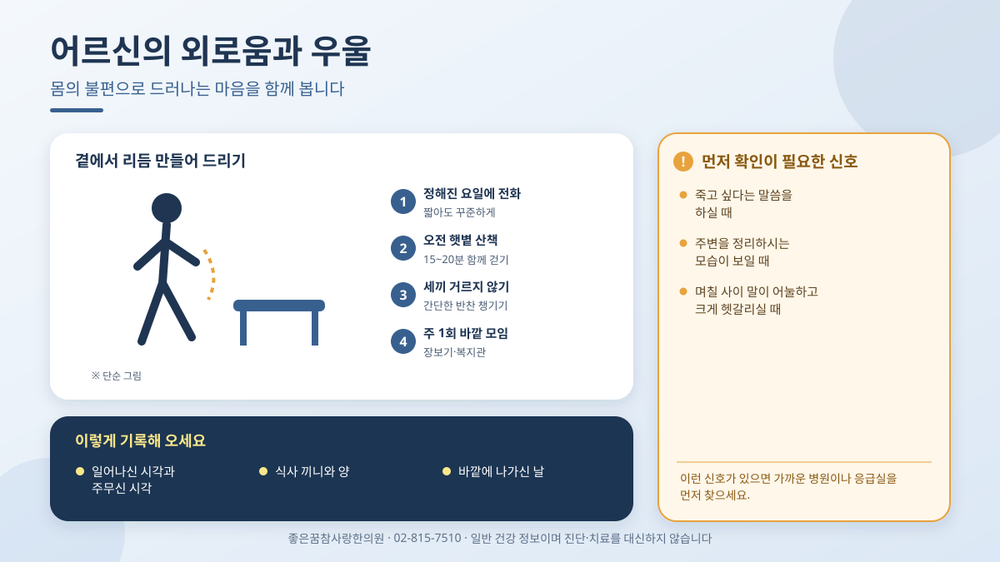

이종호 한의사 감수좋은꿈참사랑한의원 대표원장 (한의사 면허번호 19769)발행 2026-11-26 · 수정 2026-11-26
이 글의 차례
주말에 부모님 댁에 들렀습니다. 예전 같으면 현관에서부터 반겨 주시던 어머니가 오늘은 소파에 앉은 채 고개만 돌리십니다. 냉장고에는 지난번에 가져다 드린 반찬이 그대로 있고, 텔레비전은 켜져 있는데 보고 계신 것 같지 않습니다. "요즘 어떠세요?" 여쭤보면 "그냥 그렇지, 나이 들면 다 이래" 하고 넘기십니다.
진료실에서 자녀분들이 조심스럽게 꺼내시는 이야기입니다. 어디가 크게 아프신 것 같지는 않은데 기운이 없고, 말수가 줄고, 예전에 즐기시던 일에도 관심이 없어 보인다고 하십니다. 나이 들면 자연스러운 일인지, 따로 살펴봐야 하는 일인지 헷갈리신다고요.
노년기의 우울은 젊은 사람의 우울과 모습이 조금 다릅니다. 슬프다는 말보다 몸이 아프다, 기운이 없다, 잠이 안 온다는 말로 드러나는 경우가 많습니다. 그래서 본인도 가족도 우울이라고 생각하지 못한 채 지나치기 쉽습니다.
이 글에서는 어르신의 외로움과 우울이 어떤 모습으로 나타나는지, 나이 듦과 어떻게 구분해 볼 수 있는지, 가족이 무엇을 살피고 어떻게 곁에 있으면 좋은지, 그리고 한의원에서 함께 살피는 부분을 차례로 말씀드리겠습니다.
노년기 우울은 어떤 모습인가요?
노년기 우울은 기분이 가라앉는 것만큼 몸의 불편으로 드러나는 경우가 많습니다. 여기저기 쑤시고, 소화가 안 되고, 잠이 안 오고, 기운이 없다는 말씀이 이어집니다. 병원에서 검사를 받아도 크게 이상이 없다는 이야기를 듣는 경우도 흔합니다.
흥미가 줄어드는 모습도 자주 보입니다. 즐겨 보시던 드라마를 더는 챙겨 보지 않으시고, 경로당이나 교회, 동네 모임에 발길을 끊으시며, 손주 이야기에도 반응이 시큰둥해지십니다. 옷차림이나 씻는 것에 신경을 덜 쓰시는 변화도 함께 나타나곤 합니다.
말투에서 드러나기도 합니다. "내가 짐만 되지", "이제 살 만큼 살았다", "아무것도 하기 싫다" 같은 말씀이 잦아진다면 그냥 넘기지 마시고 마음을 한번 더 살펴봐 주세요.
왜 나이가 들면 외로움과 우울이 깊어지기 쉬울까요
나이가 들면 잃는 것이 많아집니다. 은퇴로 하루의 역할이 사라지고, 배우자나 친구를 먼저 떠나보내고, 자녀들은 각자의 삶으로 바빠집니다. 몸이 예전 같지 않아 바깥출입이 줄면 사람을 만날 기회도 자연스럽게 줄어듭니다.
몸의 변화도 마음에 영향을 줍니다. 무릎이나 허리가 아파 걷기 힘들어지면 집 안에 머무는 시간이 길어지고, 귀가 잘 안 들리면 대화가 부담스러워 모임을 피하게 됩니다. 잠이 얕아지고 입맛이 떨어지면 기운이 더 빠지면서 마음도 함께 가라앉습니다.
여기에 여러 가지 약, 만성 질환, 겨울철 짧은 해가 더해지면 우울이 깊어지기 쉽습니다. 어느 하나의 이유가 아니라 여러 상실과 몸의 변화가 겹쳐서 생기는 경우가 대부분입니다.
나이 듦과 우울은 어떻게 다를까요?
나이가 들면 기운이 예전만 못하고 잠이 얕아지는 것은 자연스러운 변화입니다. 하지만 그런 변화 속에서도 좋아하는 일에는 여전히 관심을 보이시고, 반가운 사람을 만나면 표정이 밝아지신다면 크게 걱정하지 않으셔도 되는 경우가 많습니다.
반면 2주 넘게 거의 매일 기분이 가라앉아 있고, 즐겁던 일에도 흥미를 잃으셨으며, 잠과 입맛, 몸무게가 함께 흔들린다면 나이 탓만으로 보기 어렵습니다. 특히 몇 달 사이에 눈에 띄게 달라지셨다면 한 번 살펴보는 것이 좋습니다.
기억력 변화와 헷갈리기도 쉽습니다. 우울할 때도 집중이 떨어져 깜빡하는 일이 늘 수 있고, 반대로 기억력 저하가 시작되면서 우울이 함께 오기도 합니다. 이 구분은 정신건강의학과나 신경과에서 함께 살펴보는 것이 정확합니다.
외로움은 어떻게 드러나나요?
외로움은 혼자 있는 시간의 길이보다 마음이 닿는 사람이 있는지와 더 관련이 있습니다. 자녀와 함께 살아도 외로우실 수 있고, 혼자 사셔도 이웃과 친구가 있어 외롭지 않으실 수 있습니다.
외로움이 깊어지면 전화가 잦아지거나, 반대로 연락을 피하시기도 합니다. 같은 이야기를 여러 번 하시거나, 사소한 일에 서운해하시는 모습도 외로움의 한 표현일 수 있습니다. 텔레비전을 하루 종일 켜 두시는 것도 집 안의 적막함을 견디기 위한 경우가 많습니다.
외로움이 오래 이어지면 잠과 입맛이 흔들리고, 몸 여기저기가 아프게 느껴지며, 우울로 이어지기 쉽습니다. 그래서 외로움은 마음의 문제이면서 몸의 건강과도 가까이 닿아 있습니다.
몸의 불편으로 먼저 오는 경우
어르신들은 마음이 힘들다는 말씀보다 몸이 아프다는 말씀을 먼저 하시는 경우가 많습니다. 소화가 안 되고 속이 더부룩하다, 머리가 무겁다, 가슴이 답답하다, 허리와 다리가 쑤신다는 말씀이 대표적입니다.
물론 이런 불편은 실제 몸의 문제일 수 있어서 먼저 확인이 필요합니다. 다만 여러 병원에서 검사를 받아도 뚜렷한 이유를 찾지 못하고 불편이 계속된다면, 마음의 무게가 몸으로 드러나는 것은 아닌지 함께 살펴볼 만합니다.
이럴 때 "검사에서 아무 이상 없대요"라는 말이 어르신께는 '내 말을 믿어 주지 않는다'는 서운함으로 들리기도 합니다. 불편은 분명히 있는 것이니, 그 불편을 인정해 드리면서 함께 방법을 찾아가는 자세가 중요합니다.
드시는 약도 함께 봅니다
어르신은 혈압약, 당뇨약, 진통제, 수면제 등 여러 가지 약을 함께 드시는 경우가 많습니다. 일부 약은 기운을 떨어뜨리거나 잠과 기분에 영향을 줄 수 있습니다. 약이 늘어난 시기와 기분이 가라앉은 시기가 겹치는지 살펴보는 것도 도움이 됩니다.
다만 이 부분은 혼자 판단하지 마시고 약 봉투를 모두 챙겨 처방한 병원이나 약국에 여쭤보세요. 약을 임의로 줄이거나 멈추는 일은 하지 않으셔야 합니다.
가족이 곁에서 할 수 있는 일
가장 먼저 할 수 있는 일은 이야기를 들어 드리는 것입니다. 해결책을 드리기보다 "요즘 많이 힘드셨겠어요" 하고 마음을 알아 드리는 한마디가 큰 힘이 됩니다. 어르신이 하시는 말씀을 고치려 하지 마시고 끝까지 들어 주세요.
연락의 횟수보다 꾸준함이 중요합니다. 정해진 요일, 정해진 시각에 전화를 드리면 어르신은 그 시간을 기다리며 하루의 리듬을 갖게 됩니다. 짧은 통화라도 매주 이어지는 것이 가끔 길게 하는 통화보다 마음을 더 든든하게 합니다.
함께 바깥에 나가는 것도 좋습니다. 동네 한 바퀴를 같이 걷거나, 장을 보러 함께 가거나, 공원 벤치에 잠깐 앉아 있는 것만으로도 햇볕을 쐬고 몸을 움직이는 시간이 됩니다.
동네에서 연결될 수 있는 곳
동작구에도 어르신이 참여할 수 있는 복지관 프로그램, 경로당, 주민센터 모임이 있습니다. 노래교실, 체조, 서예처럼 부담 없이 시작할 수 있는 활동이 많습니다. 처음에는 가족이 함께 가서 분위기를 익히시도록 도와드리면 좋습니다.
어르신 스스로 무언가를 맡으시는 것도 도움이 됩니다. 화분을 돌보시거나, 손주에게 반찬 하나를 만들어 주시거나, 이웃에게 작은 부탁을 들어주시는 일처럼 누군가에게 쓸모 있다는 느낌이 마음을 단단하게 해 줍니다.
겨울과 명절에 더 깊어지는 마음
겨울에는 해가 짧고 날이 추워 바깥출입이 크게 줄어듭니다. 빙판길이 걱정되어 며칠씩 집 밖에 나가지 않으시는 분도 많습니다. 햇볕을 쐬는 시간이 줄면 잠과 기분이 함께 가라앉기 쉬워서, 겨울에 유독 기운이 없어 보이신다면 낮 시간의 빛과 움직임을 챙겨 드리는 것이 좋습니다.
명절이나 연말처럼 모두가 모이는 때가 오히려 더 쓸쓸하게 느껴지기도 합니다. 먼저 떠난 가족이 떠오르고, 북적이던 시간이 지나간 뒤의 고요가 더 크게 다가오기 때문입니다. 명절이 지난 며칠 뒤에 한 번 더 안부를 여쭤 주세요.
듣는 것과 보는 것도 살펴 주세요
귀가 잘 안 들리시면 대화가 피곤해져 사람 만나기를 피하시게 됩니다. 눈이 침침하면 신문이나 책, 좋아하시던 취미에서 멀어지십니다. 이런 감각의 변화가 외로움을 키우는 숨은 이유가 되기도 합니다.
청력이나 시력이 예전 같지 않아 보이시면 이비인후과와 안과에서 한 번 확인해 보시길 권합니다. 보청기나 안경을 맞추고 나서 다시 모임에 나가시게 되었다는 이야기도 흔히 듣습니다.
먼저 이렇게 여쭙니다
처음 오시면 어르신과 가족께 대략 이런 순서로 여쭙니다.
- 기분이 가라앉은 것은 언제부터인가요? 그 무렵 달라진 일이 있었나요?
- 잠드는 시각과 깨는 시각, 밤에 깨는 횟수는 어떠신가요?
- 입맛과 식사량, 몸무게는 어떻게 달라지셨나요?
- 바깥출입과 사람을 만나는 횟수는 어떻게 바뀌셨나요?
- 드시는 약과 다니시는 병원은 어디인가요?
- 기억력이나 듣는 것에 달라진 점이 있으신가요?
어르신이 대답하기 어려워하시면 서두르지 않습니다. 가족이 보신 변화를 미리 적어 오시면 이야기를 이어 가는 데 큰 도움이 됩니다.
일상에서 먼저 해 볼 수 있는 것
생활의 리듬을 잡아 드리는 것이 첫걸음입니다. 거창한 계획보다 매일 반복할 수 있는 작은 일을 정해 두는 것이 좋습니다.
- 아침에 일어나는 시각을 일정하게 맞추고 커튼 열기
- 오전에 햇볕을 쐬며 15~20분 걷기
- 하루 세끼를 거르지 않도록 간단한 반찬 챙겨 두기
- 정해진 요일과 시각에 가족과 통화하기
- 낮잠은 오후 이른 시각에 30분 안쪽으로 하기
- 일주일에 한 번은 바깥 모임이나 장보기 나가기
어르신이 하기 싫어하시면 억지로 권하기보다 함께 해 보자고 말씀드려 보세요. 혼자 하시라고 하면 부담스러운 일도 가족과 함께라면 한결 가볍게 시작하실 수 있습니다.
한의원에서 함께 살필 수 있는 경우
- 기운이 없고 자꾸 눕고만 싶어 하시는 경우
- 잠이 얕고 새벽에 일찍 깨서 다시 잠들지 못하시는 경우
- 입맛이 떨어지고 소화가 더디며 몸무게가 줄어드는 경우
- 가슴이 답답하고 한숨이 잦으며 몸 여기저기가 쑤시는 경우
- 정신건강의학과 치료를 받으시며 잠과 입맛이 흔들리는 경우
좋은꿈참사랑한의원에서는 맥을 짚고 잠, 소화, 대소변, 손발 온도를 여쭌 뒤 몸 어디에 긴장과 불편이 몰려 있는지 살핍니다. 진찰한 내용을 바탕으로 침, 온열 관리, 한약 상담 가운데 지금 상태에 맞는 것을 함께 정합니다.
한약을 상의할 때는 드시는 약을 모두 확인하고 신중하게 정합니다. 우울이 깊어 보이면 정신건강의학과 진료를 함께 받으시도록 안내하고, 처방받은 약은 상의 없이 멈추지 않으시도록 말씀드립니다.
이렇게 기록해 오시면 상담이 쉬워집니다
가족이 2주 정도 간단히 적어 오시면 어르신의 하루 흐름을 이해하는 데 큰 도움이 됩니다.
- 일어나신 시각과 주무신 시각, 낮잠
- 식사하신 끼니와 대략적인 양
- 바깥에 나가신 날과 만난 사람
- 기분이 좋아 보이셨던 때와 가라앉으셨던 때
- 새로 생기거나 심해진 몸의 불편
기록은 어르신을 감시하려는 것이 아니라 곁에서 함께 지켜보려는 것입니다. 어르신께도 "요즘 어떻게 지내시는지 같이 보려고요" 하고 말씀드리면 마음을 덜 쓰십니다.
곁에 있다는 것만으로도
어르신의 외로움과 우울은 한 번에 풀리지 않습니다. 그래도 누군가 꾸준히 안부를 묻고, 함께 걷고, 이야기를 들어 준다는 느낌은 생각보다 큰 힘이 됩니다.
이번 주에는 정해진 요일에 전화 한 통을 드리는 것부터 시작해 보세요. 다음에 함께 오시면 그동안의 기록을 펼쳐 보며 그다음 걸음을 같이 정하겠습니다.
이런 증상은 먼저 확인이 필요합니다
- 죽고 싶다는 말씀을 하시거나 주변을 정리하시는 모습이 보이는 경우
- 며칠 사이에 말이 어눌해지시거나 시간과 장소를 크게 헷갈리시는 경우
이런 신호가 있으면 한의원보다 가까운 병원이나 응급실을 먼저 찾으세요.
마음이 많이 힘들 때는 자살예방상담전화 ☎ 109에서 언제든 이야기를 나눌 수 있습니다.
함께 읽으면 좋은 글
- 어르신이 기운이 없고 자꾸 눕고만 싶어 하실 때는 무엇을 살피나요?
- 기분이 2주 넘게 가라앉고 잠·입맛·흥미가 떨어질 때는 어떻게 살피나요?
- 은퇴하고 나서 하루가 길게 느껴지고 무기력할 때는 어떻게 살피나요?
- 깜빡하는 일이 부쩍 늘어 경도인지장애나 치매가 걱정될 때는 무엇부터 살피나요?
- 가까운 사람을 떠나보낸 뒤 잠과 입맛이 돌아오지 않을 때는 어떻게 하나요?

여쭙는 것
- 기분이 가라앉은 것은 언제부터인가요? 그 무렵 달라진 일이 있었나요?
- 잠드는 시각과 깨는 시각, 밤에 깨는 횟수는 어떠신가요?
- 입맛과 식사량, 몸무게는 어떻게 달라지셨나요?
생활에서 해 볼 것
- 아침에 일어나는 시각을 일정하게 맞추고 커튼 열기
- 오전에 햇볕을 쐬며 15~20분 걷기
- 하루 세끼를 거르지 않도록 간단한 반찬 챙겨 두기
한의원에서 함께 살필 것
- 기운이 없고 자꾸 눕고만 싶어 하시는 경우
- 잠이 얕고 새벽에 일찍 깨서 다시 잠들지 못하시는 경우
- 입맛이 떨어지고 소화가 더디며 몸무게가 줄어드는 경우
먼저 확인이 필요한 신호
- 죽고 싶다는 말씀을 하시거나 주변을 정리하시는 모습이 보이는 경우
- 며칠 사이에 말이 어눌해지시거나 시간과 장소를 크게 헷갈리시는 경우
한눈에 보는 표
| 구분 | 핵심 |
|---|---|
| 여쭙는 것 | 기분이 가라앉은 것은 언제부터인가요? 그 무렵 달라진 일이 있었나요? 잠드는 시각과 깨는 시각, 밤에 깨는 횟수는 어떠신가요? |
| 생활에서 해 볼 것 | 아침에 일어나는 시각을 일정하게 맞추고 커튼 열기 오전에 햇볕을 쐬며 15~20분 걷기 |
| 한의원에서 함께 살필 것 | 기운이 없고 자꾸 눕고만 싶어 하시는 경우 잠이 얕고 새벽에 일찍 깨서 다시 잠들지 못하시는 경우 |
| 먼저 확인이 필요한 신호 | 죽고 싶다는 말씀을 하시거나 주변을 정리하시는 모습이 보이는 경우 며칠 사이에 말이 어눌해지시거나 시간과 장소를 크게 헷갈리시는 경우 |
자주 묻는 질문
부모님이 병원에 가기를 싫어하시는데 어떻게 권하면 좋을까요?
마음 이야기보다 잠이나 소화처럼 어르신이 직접 불편해하시는 부분으로 말씀을 꺼내 보세요. 가족이 함께 가겠다고 하시면 부담을 덜 느끼십니다.
나이가 들면 원래 우울해지는 것 아닌가요?
나이 들며 기운이 줄어드는 것은 자연스럽지만, 2주 넘게 기분이 가라앉고 흥미와 입맛, 잠이 함께 흔들린다면 나이 탓만으로 보기 어렵습니다. 한 번 살펴보시길 권합니다.
우울증 약을 드시는데 한약을 함께 드셔도 되나요?
드시는 약을 모두 확인하고 신중하게 정합니다. 약 봉투를 가져와 주시면 함께 살펴보고, 처방받은 약은 상의 없이 멈추지 않으시도록 안내합니다.
혼자 사시는 부모님께 가족이 자주 못 가는데 어떻게 하나요?
정해진 요일과 시각에 짧게라도 전화를 드리는 것이 도움이 됩니다. 주민센터나 복지관의 안부 확인 서비스, 어르신 모임도 함께 알아보시면 좋습니다.
가족이 대신 상담받을 수 있나요?
가족의 이야기도 큰 도움이 되지만, 진맥과 진찰은 어르신을 직접 뵈어야 할 수 있습니다. 처음에는 가족이 함께 오셔서 어르신과 나란히 이야기를 나누시길 권합니다.
좋은꿈참사랑한의원은 재진 때 지난번 이야기부터 이어서 여쭙니다. 진료시간과 예약은 오시는 길에서 확인하세요.
어디서 상담받을 수 있나요?
좋은꿈참사랑한의원은 서울 동작구 만양로2길 2 신성빌딩 3층·5층(서울 동작구 상도동, 7호선 상도역 3번 출구 근처)에 있습니다. 한의사 3명(이종호 대표원장, 조영기 수석진료원장, 정원영 진료원장)이 진료합니다. 진료시간은 평일 09:30~20:00(점심 13:00~14:00), 토·일·공휴일 09:30~15:00이며, 방문 전 전화로 확인을 권합니다. 예약은 네이버 예약, 카카오톡 상담, 전화 02-815-7510로 받습니다.
이 글은 일반적인 건강 정보이며 개인의 진단이나 치료를 대신하지 않습니다. 증상이 있거나 복용 중인 약이 있다면 진료를 통해 확인하세요. 치료 효과는 개인마다 다를 수 있습니다.
작성 기준: 일반적으로 알려져 있는 건강 정보를 참고해 정리했습니다(대표원장 감수). 증상 기록은 1~2주 동안 하루 1회, 비슷한 시간에 적어 오시면 지난 상태와 비교하기 쉽습니다.